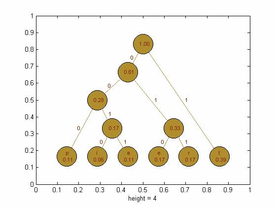
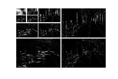

| DiscreteWavelets Toolbox |
Create Huffman codes
[uniq,freq,codes] = MakeHuffmanCodes(v)
[uniq,freq,codes,origlen] = MakeHuffmanCodes(v)
[uniq,freq,codes,origlen,newlen] = MakeHuffmanCodes(v)
[uniq,freq,codes] = MakeHuffmanCodes(v) takes as input a vector or matrix, a character string, or a cell array whose elements are characters and returns:
[uniq,freq,codes,origlen] = MakeHuffmanCodes(v) also returns the bitstream length of the original input v.
[uniq,freq,codes,origlen,newlen] = MakeHuffmanCodes(v) also returns the bitstreatm length of the input build with codes.If v is a vector or matrix, the elements must be nonnegative integers.
This code is based on the function written by huffman5 written by Sean Danaher, University of Northumbria, Newcastle UK.
See Section 3.4 for more information on creating Huffman codes.
Find the Huffman codes for the string pitterpattertatter.
str='pitterpattertatter'; %Create the string [uniq,freq,codes,origlen,newlen]=MakeHuffmanCodes(str) %Create the Huffman codesThe output is
uniq =
'a'
'e'
'i'
'p'
'r'
't'
freq =
0.1111
0.1667
0.0556
0.1111
0.1667
0.3889
codes =
'0011'
'010'
'0010'
'000'
'011'
'1'
origlen =
144
newlen =
43
We can use HuffmanTree to plot the Huffman tree for pitterpattertatter.
HuffmanTree(uniq,freq,codes);
gry=ImageNames('ImageType','GrayScale','ListThumbnails','True'); %Get file names for included images. Use a thumbnail
A=ImageRead(gry{1}); %Load a thumbnail image
ImagePlot(A); %Plot the image
[u,f,c,old,new]=MakeHuffmanCodes(A); %Create the Huffman codes for A
str=sprintf('The length of the Huffman coded stream for A is %i.',new);
disp(str);
B=HWT2D(A,3); %Compute three iterations of the Haar wavelet transform
figure;
WaveletDensityPlot(B,3,'DivideLinesThickness',[2 2 2]); %Plot the wavelet transforma
[u,f,c,old,new]=MakeHuffmanCodes(round(B-min(min(B)))); %Compute the Huffman codes - make sure the input is nonnegative integers.
str=sprintf('The length of the Huffman coded stream for B is %i.',new);
disp(str);

The length of the Huffman coded stream for A is 302526. The length of the Huffman coded stream for B is 219277.
© 2007-2008 Patrick Van Fleet